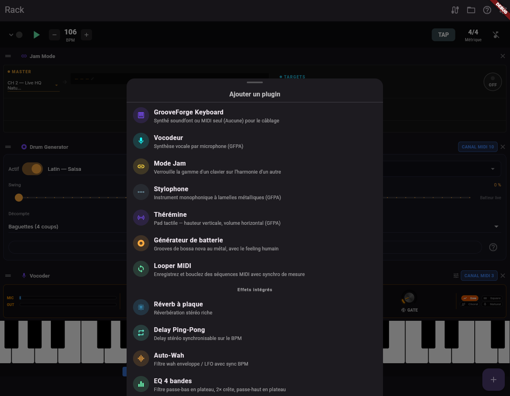

.gfpd plugins
GrooveForge Plugin Descriptor — one YAML file for metadata, signal graph, parameters, and UI layout.
Why it exists
Most built-in audio effects and all bundled MIDI FX are described declaratively. You can ship new plugins by writing YAML: no Flutter UI code and no recompile for experiments (you can also load a file from disk via Load .gfpd from file… in the add-plugin sheet).

ui: block in each .gfpd file.Plugin types
type: | Use |
|---|---|
effect | Stereo insert / send effect; graph: with audio_in / audio_out and DSP nodes. |
midi_fx (or midifx) | MIDI processor; midi_nodes: chain (transpose, harmonize, arpeggiate, …). |
instrument / analyzer | Reserved for advanced GFPA use cases — see API docs in the repo. |
What goes in the file
spec: "1.0", uniqueid(reverse-DNS),name,version,type.parameters:— automatable controls with stableparamIdintegers (never reuse IDs once shipped).- Audio:
graph:withnodesandconnections(Freeverb, delay, EQ, compressor, chorus, wah, …). - MIDI:
midi_nodes:with nodetypeandparamsbound to{ param: id }or constants. ui:— knobs, sliders, toggles, selectors, meters; optionalgroups:for responsive sectioning.
Authoring guide (repository)
The canonical reference is
assets/plugins/HOW_TO_CREATE_A_PLUGIN.md
— node catalogue, UI control types, recipes (wet/dry, BPM-synced wah), and a pre-publish checklist.
Download bundled .gfpd files (from main)
| File | Kind |
|---|---|
| reverb.gfpd | Audio — plate reverb |
| delay.gfpd | Audio — ping-pong delay |
| wah.gfpd | Audio — auto-wah |
| eq.gfpd | Audio — 4-band EQ |
| compressor.gfpd | Audio — dynamics |
| chorus.gfpd | Audio — chorus / flanger |
| harmonizer.gfpd | MIDI FX |
| chord_expand.gfpd | MIDI FX |
| arpeggiator.gfpd | MIDI FX |
| transposer.gfpd | MIDI FX |
| velocity_curve.gfpd | MIDI FX |
| gate.gfpd | MIDI FX |